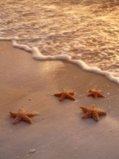

|
Shanta Tuazon · 2 days ago ·3 mins read My SSELECT experience was full of laughter, silence, reflection, and shouting. I would say that the most memorable activity we had during the course was the last activity where our instructor asked as to play doctor kwak-kwak in two different scenarios. It was the most time I had personally spent with my classmates, the experience was engaging and I would recommend the same activity for the future students who will be taking the same subject. The finals definitely had a ton of workshops which helped me in crafting a better version of me, the results are not their yet but I'm getting there. SSELECT was one of the subjects you would think of your "rest subject" not necessarily the "free time subject" I just named it that because the subject itself is just light. The picture beside this reflection depicts how exactly I feel during our SSELECT time, where everything is a bliss and at peace. |